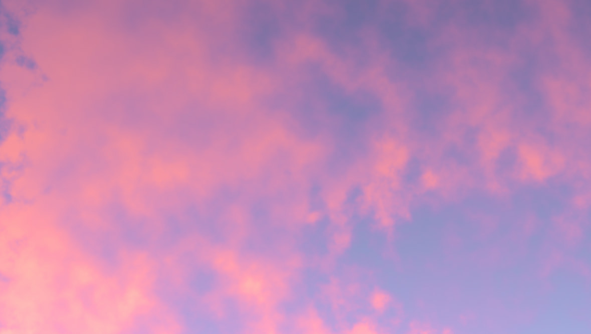
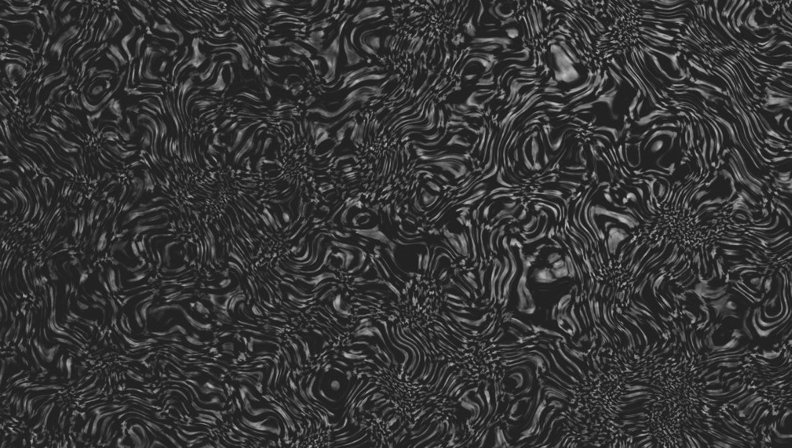
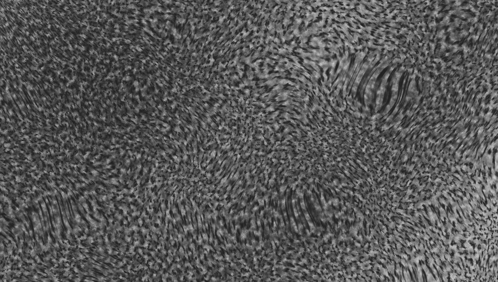
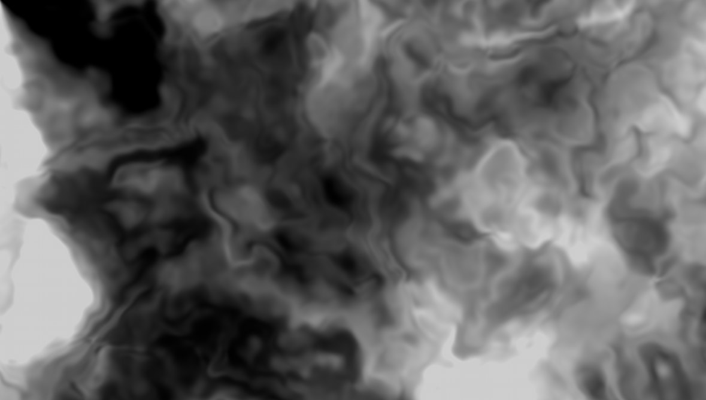
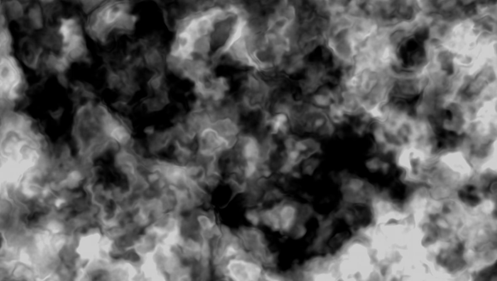
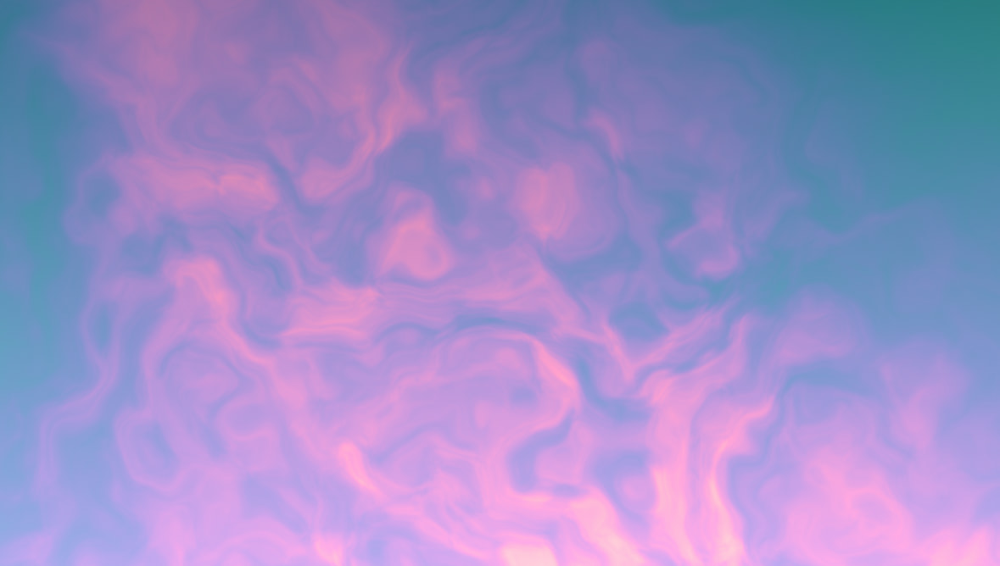
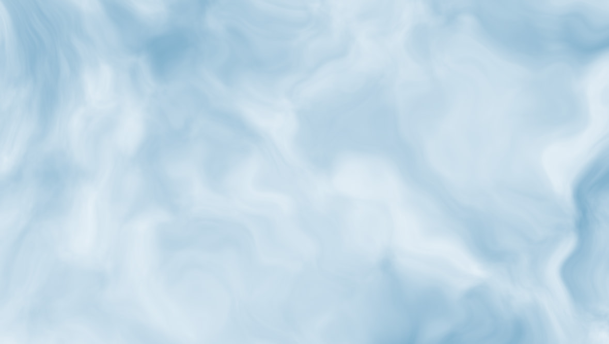

None of these skies was painted. There's no brush, no hand placing shapes. Just a rule, written in code, doing the work.
Each image is a grid of 13,056,000 points. Every point knows two things about itself: how far across it sits, and how far down. x and y. The task is to turn those two numbers into a color, thirteen million times over, until something that could be a cloud in the sky shows up.
So I didn't start with code. I started with a question: what makes a cloud a cloud? For one thing, it's never the same twice. The randomness is part of what it is. It's soft. It doesn't have edges, it just thins out into air. It has detail at every scale at once, big masses, smaller billows, then wisps, and it's patchy, dense and torn in one place, thin and quiet in the next, lit on one side and shadowed on the other.
Knowing these traits, the task was to describe them with a few mathematical rules, so that each of those thirteen million points could work out, on its own, what color it should be. Is there cloud where I am, and if I'm near an edge, how gently does it fade? How dense am I, brighter like daylight, or darker like a storm? How high up, near the warm horizon or the cooler top? Every trait becomes a small calculation, and each point runs through all of them until one color comes out. I just described what a cloud is, as math, and let the image put itself together.
Other accidents





